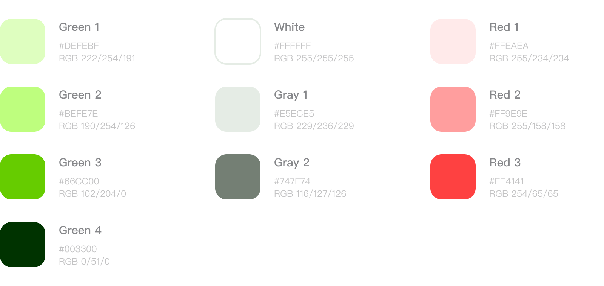
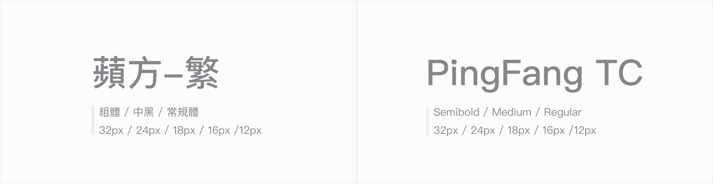
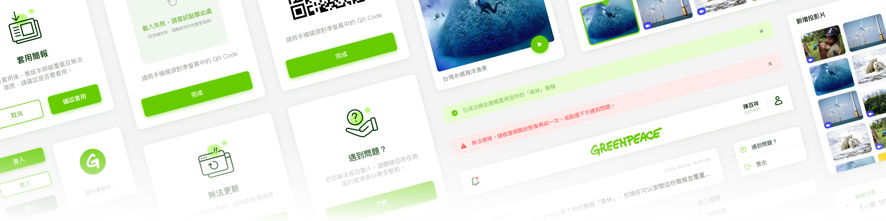
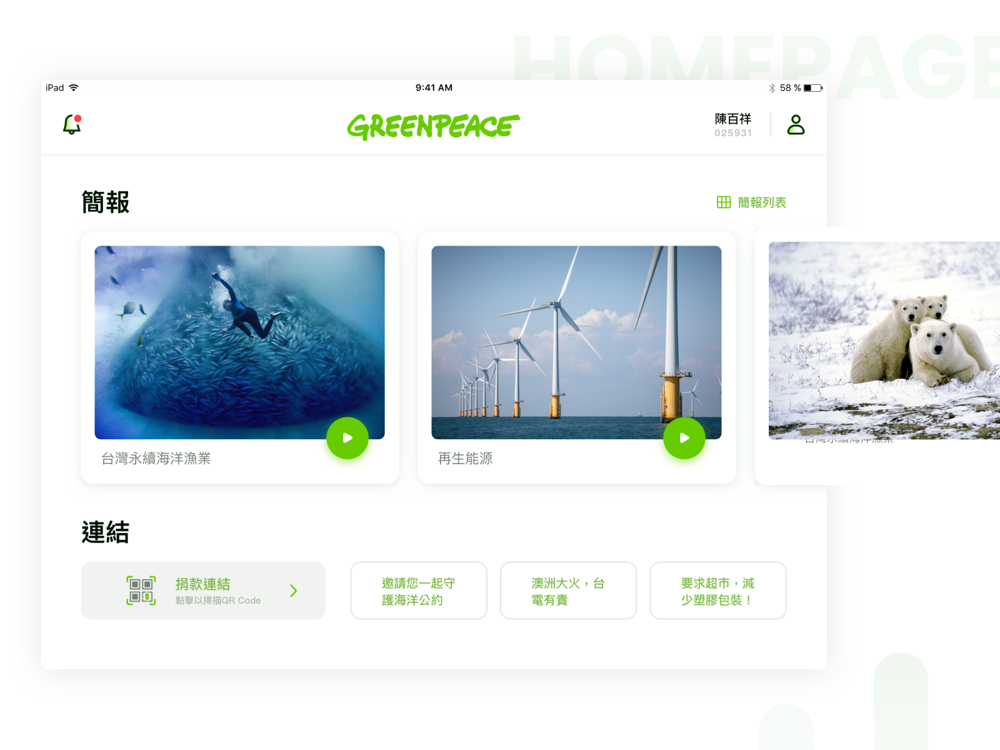
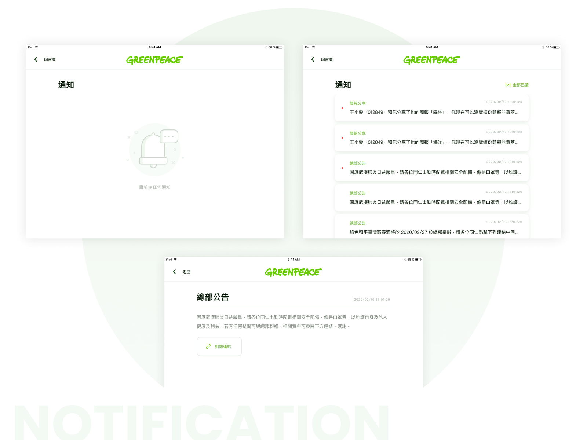
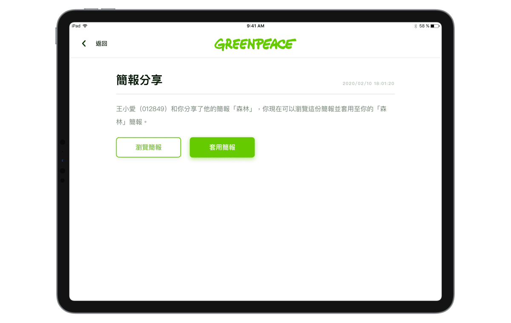
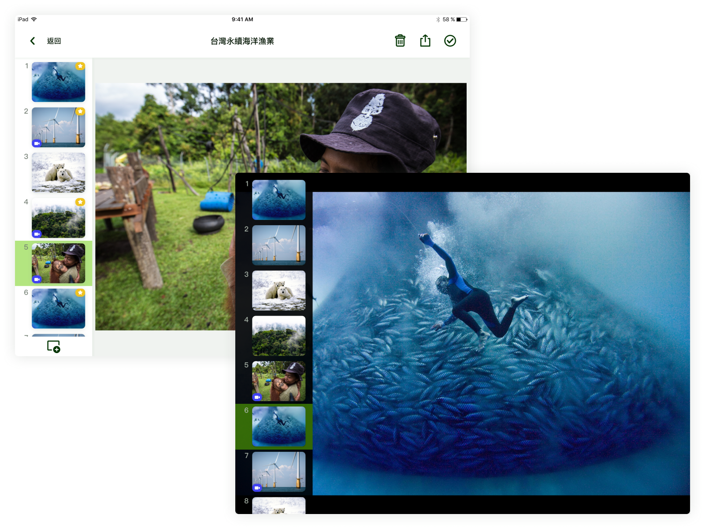
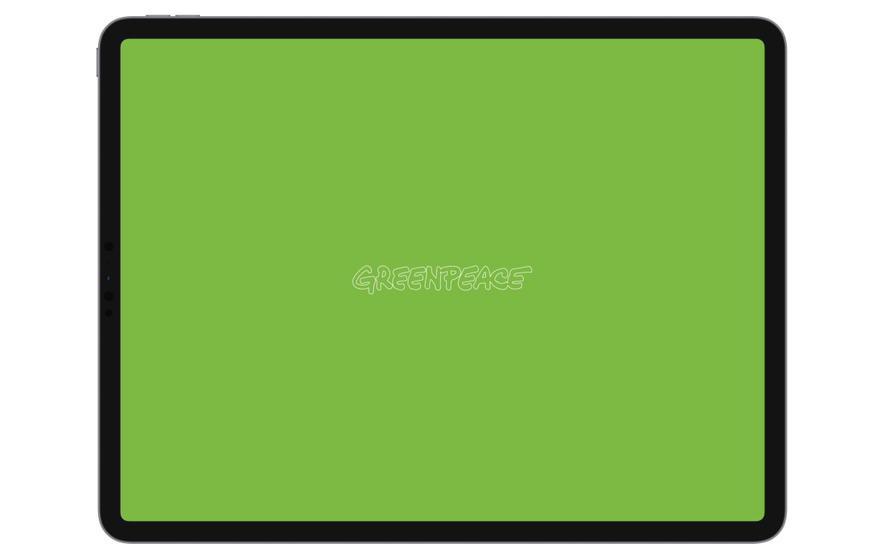
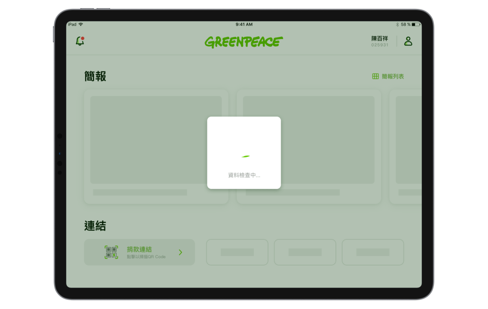

客戶為環境保護相關的非營利組織，平常旗下的志工會到街上和路人推廣環保議題並進行募資活動。而客戶發展此產品目的為簡化志工們的事前準備，客戶會上傳每個簡報議題的必有素材和選用素材到雲端資料庫，讓志工們能在產品端下載，並依據自己的偏好來製作簡報，以提升推廣時的流暢度，更讓組織在後台能有效掌握各志工的募款狀況。
色彩選用客戶既有品牌色，為增加產品高效、輕快感的氛圍，經調整最終確定整體顏色以及過渡色如下：

字體選用IOS默認字體蘋方。


將首頁規劃成兩大區塊：「簡報」及「連結」。其中「簡報」是以最近瀏覽的時間排序，讓使用者能在首頁直接打開近期的簡報，而底下的「連結」中，利用樣式及大小來區分捐款和其他的差別。

使用者可以在「通知頁」看到組織的全體公告以及別人的簡報分享通知。

可將編排好的簡報分享給他人，接收方可瀏覽簡報並選擇是否要套用。

依照自己的簡報習慣來編輯，增加簡報時的流暢度。

歡迎頁利用Logo搭配Slogan，讓使用者在開啟App時即有深刻的品牌印象，而載入動畫則使用Logo來做變化，增添趣味性的同時也降低使用者等待時的煩躁感。動效製作方式皆為Adobe After Effects搭配Lottie(Airbnb 開源的跨平台動畫函式庫)，讓工程師輕鬆實現動畫效果。

